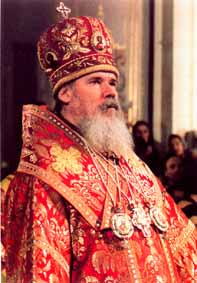

Nativity Epistle
by His Holiness Patriarch Alexei II of Moscow and All Russia
to archpastors, pastors, the monastics and all children of the Russian Orthodox Church
The Nativity of Christ 2001/2002
Today the Virgin gives birth to the Creator of all, Eden reveals the cave, And the star points to Christ, The Sun of those who dwell in darkness. From the Office of Great Compline of the FeastBeloved in the Lord Most Reverend archpastors, venerable pastors, humble monks and nuns, God-loving laity my dear brothers and sisters! With my whole heart I greet you on this Great and Radiant Feast of the Nativity of Christ!
Let us offer thanksgiving to the Lord, for according to His ineffable love for mankind we have once again been granted the joy of partaking of the Mystery of Salvation, which has been promised in the Beginning of the world, fulfilled in its, latter days (I Cor. 10: 11) and remains with us unto the ages.
Let us rejoice, for the great Mystery of Divine Incarnation has been fulfilled on earth: God the Word, Who had created the world, entered it in order to destroy the barrier between creature and Creator which has been erected by sin, and to grant to renewed humanity Eternal Life and the joy of Communion with God.
Christ is born on earth -- and also within the soul of every Christian who offers his heart to the Savior. But only a heart that is pure, a heart without evil and sin, may be offered to God. Beloved! Let us diligently purify our hearts, concerning ourselves, first of all, before all things with "the one thing needful" (Luke 10:42), and our efforts will not remain in vain, for the Lord knows all thins, and human life is in His hand.
Today, two thousand years after "the Word became flesh and dwelt with us" (John 1, 14), the Kingdom of God has come closer to us, because in this time a multitude of saints has radiated forth from within the Church of Christ. During the Savior's life on earth only a handful of disciples were with Him, but within the Holy Church, the foundations of which were laid by Him, this number has greatly increased. Innumerable champions of faith, ascending to the radiance of the Lord's glory from the Church on earth, which is the foundation of the Church in Heaven, brought closer to us the Kingdom of God. And so they still do, to this very day, when their ranks have been joined by the assembly of the New Martyrs and Confessors of Russia. Before the Throne of the Heavenly King they now pray for their earthly homeland, and for each one a-4 of us.
The joy of the earthly Birth of the Divine Child is illumined for us by the joy of Christ Resurrected. "Why is the Feast of Nativity which we celebrate today higher than the triumph of those times?" asks St. Ambrose of Milan. And he answers his own question in the followingway: "Back then people rejoiced only in the Lord who was Born; but today we glorify Him not only as the One who was Born, but also as the One Resurrected, Co-Reigning with the Father and the Spirit." In the Nativity of Christ we behold also the Resurrection of the Savior of the world, and His reign in glory.
Dear and Most Reverend archpastors, dear fathers, brothers and sisters! By the grace of God, for the Russian Orthodox Church the first year of the new century has been a flourishing one: we continued building new churches and rebuilding those which had been ruined; new monastic communities and theological schools have opened; mutual cooperation of State and society has been strengthened.
During the past year the Lord permitted me to visit several dioceses of our Church. I visited four Byelorussian dioceses - those of Brest, Pinsk, Turov, and Gomel, which suffered the most in the Chernobyl catastrophe. In the Tobolsk diocese I visited five cities of Westem Siberia, consecrating the churches that had been built there. I will preserve a grateful memory of my trips to the St. Petersburg diocese, which remains dear to me after my service there as Diocesan; to the Moscow diocese, where in the ancient land of Podolsk we consecrated a Church in honor of the Protection of the Mother of God, rebuilt from its ruins; as also to the dioceses of Chuvashiya and Kaluga. The panikhida served on the battlefield of Kulikovo became a major event during a trip to the diocese of Tula. With joy I remember my pilgrimage to the Transfiguration of Christ Monastery on the Solovetskie Islands, and the visit to the newly formed diocese of Baku.
I made an official visit to the Republic of Armenia, where I participated in the celebrations commemorating the 1700th anniversary of the conversion of this land to Christianity.
I remember gratifying minutes of the prayerful communion with the faithful. As I visit dioceses both near and distant, I see that ever-increasing number of people are returning to the faith of their fathers. Thousands of pilgrims, who joined us in the services, a multitude of children who came to Holy Communion, -- all this is testimony that the Orthodox soul of the nation is alive and its revival to its former strength is near. Let us pray, therefore, for the people of our land, who through their great suffering have earned a better life, let us renew and transfigure our life through our own labors. It is only with the help of God that imperfections of human nature can be overcome, and a righteous life, holy and filled with peace and well-being, can be attained.
Yes, as before, we face many difficulties and problems. These are poverty, social vulnerability, the threat of terrorism, crime, propaganda of depravity, the spread of alcoholism and drug-addiction, and other horrifying vices. At the base of it all lies damage done to the human soul, which means that one cannot change society for the better without faith, hope and love. Orthodox people have always known this. It is not by chance that when they experienced difficult times, or settled in new lands, they always erected churches in order that they might offer prayer to the Lord: our devout ancestors understood that without the will of God it is impossible for any human arrangement to survive.
This past year the Lord has visited us with many sorrows -- our land was inundated by floods, buffeted by hurricanes, scorched by drought. The world situation is rather tense. People once again are rising up against each other. Thousands of peaceful civilians of different countries became victims of an evil will. But even in the most difficult of situations, let us not forget the words of Christ the Savior, addressed to each one of us: "Do not be afraid, only believe" (Mk. 5: 36). Suffering should not harden our souls; for if the Lord leads us by the narrow path of sorrows, we come even closer to the Father's House, to the Heavenly Kingdom. Let us intensify our prayer for our Fatherland, for our kin, for the entire human race. And let us remember that the joy that has been given to us overcomes every calamity generated by "this world." "Hence, let us rejoice, brethren, that we were deemed worthy to recompense the Lord 'for all that He has rendered unto us,"' says Venerable Theodore the Studite. And what is this recompense? A life of cross-bearing that we undertake, and the confession of faith "in which we stand, and rejoice in hope of the glory of God" (Rom. 5, 2). And this we are to celebrate not just for one single day, but during our entire life. Every day and every hour of our life, my dear ones, should be filled with joy in the Lord, especially in the radiant Feast of His Nativity. May there remain no place in our hearts for fear and despondency, enmity and dissension, despair and unbelief in the power of God. Let us rejoice in the Divine Infant Who is born, allowing the whole world to partake of this joy, and bringing the light of the preaching of Gospel both to those who are near and those who are far away.
Beloved! Again and again with my whole heart I greet you on this great and salutary feast of the Nativity of Christ! On the threshold of a new year of the Lord's goodness, let us offer our cordial thanksgiving to the Lord Almighty for His "great and bountiful mercies" poured out upon us. In the New Year I wish to all of you, Most Reverend archpastors, dear fathers, brothers and sisters, the unfailing assistance of God, spiritual fortitude and physical strength, steadfastness in bearing your life's cross and in your labors for the welfare of our Holy Mother the Orthodox Church. May the Lord Almighty bless us all with peace, and may the grace-filled Protection of the Queen of Heaven be with us always!
"Christ is on earth -- ascend!"

PATRIARCH OF MOSCOW AND ALL RUSSIAThe Nativity of Christ 2001/2002, Moscow
Copyright (c) 2000 Communication service of the Department for External Church Relations of the Moscow Patriarchate Adress: 22, Danilovsky val, Danilov monastery DECR, 113191 Moscow, Russia Telephone: (7-095) 2302439 Fax: (7-095) 2302619 E-mail: commserv@mospat.dol.ru
We confidently recommend our web service provider, Orthodox Internet Services: excellent personal customer service, a fast and reliable server, excellent spam filtering, and an easy to use comprehensive control panel.